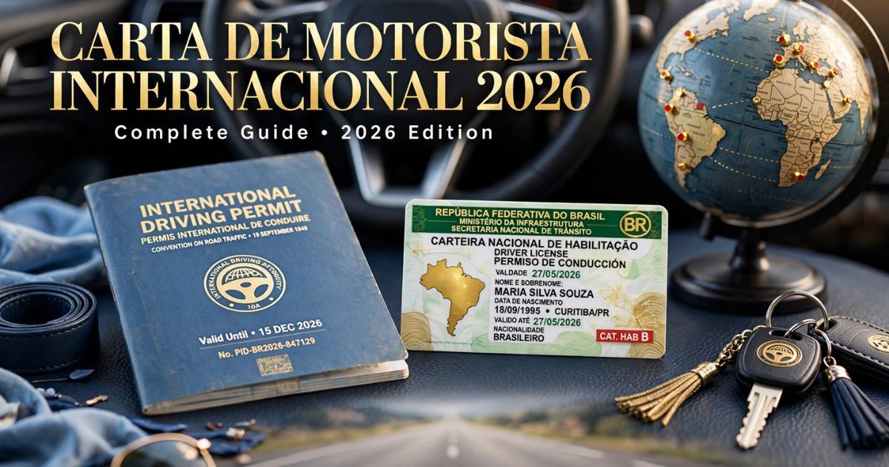

Carteira de Motorista Internacional 2026: guia completo para dirigir no exterior
Introdução: a liberdade de dirigir no exterior
Viajar para o exterior e ter a liberdade de dirigir é uma das experiências mais incríveis que um viajante pode ter. Seja para fazer uma road trip pela costa da Califórnia, explorar as estradas da Toscana na Itália, ou simplesmente alugar um carro para conhecer pontos turísticos mais afastados, dirigir no exterior oferece autonomia e flexibilidade que o transporte público não proporciona.
No entanto, para dirigir legalmente em muitos países, você precisa de mais do que sua carteira de motorista brasileira. É necessário obter a Carteira de Motorista Internacional (PID) — Permissão Internacional para Dirigir — que traduz os dados da sua CNH para diversos idiomas e a torna válida em mais de 150 países ao redor do mundo.
Em 2026, o processo para obter a PID continua sendo simples e acessível, com valores acessíveis e procedimentos claros. Neste guia completo sobre a Carteira de Motorista Internacional, você vai encontrar tudo o que precisa saber: o que é a PID, quem precisa, como tirar, quais documentos são necessários, os valores atualizados, a validade do documento e quais países aceitam a permissão.
Nosso objetivo é que você possa planejar sua viagem com tranquilidade, sabendo que pode dirigir legalmente no seu destino e aproveitar cada minuto da sua jornada sobre quatro rodas.

A Carteira de Motorista Internacional (PID) é essencial para dirigir no exterior
O que é a Carteira de Motorista Internacional (PID)
A Carteira de Motorista Internacional, também conhecida como PID ou Permissão Internacional para Dirigir, é um documento oficial que traduz os dados da sua Carteira Nacional de Habilitação (CNH) para diversos idiomas, tornando-a válida em países que não falam português.
Características principais da PID:
- Tradução oficial: Traduz os dados da sua CNH para inglês, espanhol, francês, alemão e outros idiomas.
- Reconhecimento internacional: Válida em mais de 150 países signatários da Convenção de Viena (1968) ou da Convenção de Genebra (1949).
- Documento complementar: A PID não substitui a CNH — ela deve ser usada em conjunto com a carteira de motorista brasileira.
- Validade limitada: Geralmente válida por 1 ano a partir da data de emissão.
Atenção: A PID não é uma permissão para dirigir, mas sim uma tradução oficial da sua CNH. Ela não permite que você dirija se sua CNH estiver vencida ou suspensa.
Quem precisa da Carteira de Motorista Internacional
A necessidade da PID varia conforme o país de destino e o tempo de permanência. Entenda quando ela é obrigatória ou recomendada.
Quando a PID é obrigatória:
- Em países que exigem a PID para turistas — Como Itália, Espanha, Portugal, França, Alemanha, Japão, Austrália, entre outros. A PID é obrigatória para turistas nesses países, mesmo por curtos períodos.
- Para alugar carros — A maioria das locadoras de veículos no exterior exige a apresentação da PID juntamente com a CNH para efetuar o aluguel.
- Em caso de fiscalização — Sem a PID, você pode ser multado ou ter o veículo apreendido em uma fiscalização de trânsito.
Quando a PID é recomendada (mas não obrigatória):
- Estados Unidos e Canadá — A PID não é obrigatória para turistas, mas é altamente recomendada, pois facilita a comunicação em caso de fiscalização ou acidente.
- Reino Unido e Irlanda — A PID não é obrigatória para turistas com CNH em inglês, mas é recomendada para maior segurança.
- América Latina (Argentina, Chile, Uruguai, etc.) — A PID não é obrigatória, mas pode ser útil em casos de fiscalização.
Quando a PID NÃO é necessária:
- Se você tem CNH de país do Mercosul — Nos países do Mercosul (Argentina, Uruguai, Paraguai, etc.), a CNH brasileira é aceita sem PID.
- Se você tem CNH com tradução juramentada — Em alguns casos, uma tradução juramentada da CNH pode ser aceita, mas a PID é sempre a opção mais segura.
Requisitos para obter a PID
Os requisitos para obter a Carteira de Motorista Internacional são simples e acessíveis para a maioria dos motoristas brasileiros.
Requisitos básicos:
- Ser maior de 18 anos — A PID só pode ser emitida para maiores de idade.
- Possuir CNH válida — Sua carteira de motorista brasileira deve estar dentro do prazo de validade. A PID não pode ser emitida se a CNH estiver vencida.
- Não estar com a CNH suspensa ou cassada — Motoristas com CNH suspensa ou cassada não podem obter a PID.
- Ter documentos pessoais em dia — RG ou passaporte válido.
Documentos necessários:
- CNH original — Válida e com foto recente.
- Cópia da CNH — Frente e verso.
- Documento de identificação (RG ou passaporte) — Original e cópia.
- CPF — Comprovante de regularidade.
- Comprovante de residência — Atualizado.
- Comprovante de pagamento da taxa — Da emissão da PID.
Documentos necessários para a PID
A documentação para obter a PID é simples e organizada. Confira a lista completa:
Documentos obrigatórios:
- Carteira Nacional de Habilitação (CNH) — Original e cópia simples (frente e verso). A CNH deve estar válida.
- Documento de identificação — RG ou passaporte (original e cópia).
- CPF — Regularizado na Receita Federal.
- Comprovante de residência — Atualizado (até 90 dias).
- Comprovante de pagamento da taxa — Para emissão da PID.
- Foto 3x4 ou 5x7 — Recente, com fundo branco.
Documentos adicionais (em casos específicos):
- Se houve mudança de nome — Apresente certidão de casamento, divórcio ou averbação.
- Se a CNH for digital (CNH-e) — Apresente a versão impressa ou o documento com QR Code disponível no aplicativo.
Como tirar a Carteira de Motorista Internacional
O processo para obter a PID é simples e pode ser feito em diversos locais autorizados. Confira o passo a passo:
- Verifique a necessidade — Confirme se o país de destino exige a PID e se sua CNH está válida.
- Reúna a documentação — Organize todos os documentos listados anteriormente.
- Dirija-se a um órgão autorizado — A PID pode ser emitida pelo Detran, pelo Automóvel Clube do Brasil (ACBr) ou por entidades credenciadas pelo Denatran.
- Preencha o formulário — Preencha o formulário de solicitação da PID com seus dados pessoais e da CNH.
- Efetue o pagamento — Pague a taxa para emissão da PID (valor varia conforme o órgão emissor).
- Entregue a documentação — Apresente os documentos e aguarde a emissão da PID.
- Retire a PID — Em geral, a PID é emitida no momento do atendimento, ou em até 5 dias úteis.
Dica: Para maior comodidade, você pode solicitar a PID online em alguns estados, com a entrega do documento pelos Correios.
Valores e taxas da PID em 2026
Os valores para emissão da PID variam conforme o órgão emissor e a localização. Confira os valores médios:
| Órgão emissor | Valor (R$) | Prazo de emissão |
|---|---|---|
| Detran (alguns estados) | R$ 80,00 a R$ 150,00 | Até 5 dias úteis |
| Automóvel Clube do Brasil (ACBr) | R$ 120,00 a R$ 180,00 | Imediato (emissão na hora) |
| Entidades credenciadas | R$ 100,00 a R$ 200,00 | Imediato a 3 dias úteis |
Descontos e isenções: Alguns órgãos oferecem descontos para idosos ou pessoas com deficiência. Verifique as condições na hora da solicitação.
Validade e renovação da PID
A validade da PID é limitada e pode variar conforme o tipo de permissão e o país de destino.
Validade da PID:
- Validade padrão: 1 ano a partir da data de emissão.
- Validade máxima: Em alguns casos, a PID pode ter validade de até 3 anos (dependendo da convenção assinada pelo país).
Quando renovar:
- Antes do vencimento: Recomenda-se renovar a PID antes do vencimento, especialmente se você planeja viajar para países que exigem o documento.
- Processo de renovação: O processo de renovação é idêntico ao da primeira emissão, incluindo a apresentação de todos os documentos.
Atenção: A PID expira automaticamente na data de vencimento. Não é possível prorrogar a validade — é necessário solicitar uma nova PID.
Países que aceitam a PID
A PID é aceita em mais de 150 países ao redor do mundo. Confira os principais destinos que exigem ou aceitam a PID:
Países que exigem PID (ou PID + CNH):
- Europa: Alemanha, Áustria, Bélgica, Espanha, França, Grécia, Itália, Holanda, Portugal, Suíça, entre outros.
- América do Norte: México (exige PID para turistas).
- América Latina: Colômbia, Peru, Costa Rica, Panamá, República Dominicana.
- Ásia: Japão, Coreia do Sul, Tailândia, Singapura, Malásia.
- Oceania: Austrália, Nova Zelândia.
- Oriente Médio: Emirados Árabes Unidos, Arábia Saudita.
Países que recomendam (mas não exigem):
- Estados Unidos — A PID não é obrigatória, mas é altamente recomendada.
- Canadá — A PID não é obrigatória, mas é recomendada.
- Reino Unido — A PID não é obrigatória, mas é recomendada.
- Irlanda — A PID não é obrigatória, mas é recomendada.
Dica: Antes de viajar, verifique a exigência de PID no site do consulado do país de destino. As regras podem mudar conforme a nacionalidade do viajante e o tempo de permanência.
Dicas para dirigir no exterior
Além de ter a PID em mãos, é importante se preparar para dirigir em outro país. Confira nossas dicas:
- Conheça as regras de trânsito — Cada país tem suas próprias regras de trânsito. Pesquise com antecedência sobre limites de velocidade, sinalização e particularidades locais.
- Leve a PID e a CNH sempre com você — Em caso de fiscalização, você deve apresentar ambos os documentos.
- Contrate um seguro de carro — Verifique se a locadora oferece seguro completo e se você está coberto em caso de acidentes.
- Verifique as exigências da locadora — Algumas locadoras exigem que a PID tenha sido emitida há menos de 1 ano.
- Respeite as leis locais — Use sempre o cinto de segurança, não use o celular ao volante e respeite os limites de velocidade.
- Adapte-se ao trânsito local — Em países como Reino Unido, Austrália e Japão, o trânsito é pela esquerda. Pratique com calma antes de pegar estradas movimentadas.
- Tenha um mapa ou GPS — Utilize aplicativos de navegação como Google Maps ou Waze para se orientar.
A Carteira de Motorista Internacional é um investimento pequeno que pode evitar grandes dores de cabeça! Por menos de R$ 200, você garante a tranquilidade de dirigir legalmente no exterior, sem risco de multas ou apreensão do veículo. Lembre-se: a PID não substitui a CNH — você deve sempre andar com os dois documentos. E, antes de viajar, verifique as regras de trânsito do país de destino!
❓ Perguntas Frequentes sobre a Carteira de Motorista Internacional
Sim, na maioria dos países. A maioria das locadoras de veículos no exterior exige a PID juntamente com a CNH para efetuar o aluguel. Sem a PID, você pode ter o aluguel negado.
Sim, a PID é aceita nos Estados Unidos, embora não seja obrigatória. Ela facilita a comunicação com as autoridades em caso de fiscalização e é frequentemente exigida por locadoras de veículos.
O valor da PID varia conforme o órgão emissor. Em média, custa entre R$ 80 e R$ 200. O Automóvel Clube do Brasil (ACBr) e o Detran são as principais opções para emissão.
A PID tem validade de 1 ano a partir da data de emissão. Após esse período, é necessário solicitar uma nova PID. Não é possível prorrogar a validade.
Não. A PID deve ser usada em conjunto com a CNH brasileira. Você deve sempre andar com os dois documentos ao dirigir na Europa. A PID é apenas uma tradução da sua CNH.
A PID pode ser emitida pelo Detran (em alguns estados), pelo Automóvel Clube do Brasil (ACBr) ou por entidades credenciadas pelo Denatran. Alguns estados permitem a solicitação online.
Não. Nos países do Mercosul (Argentina, Uruguai, Paraguai, etc.), a CNH brasileira é aceita sem a necessidade de PID. No entanto, é recomendável ter a PID para maior segurança em caso de fiscalização.
Se sua CNH estiver vencida, você não poderá obter a PID. Primeiro, renove sua CNH no Detran e, depois, solicite a PID. A PID só pode ser emitida com a CNH válida.